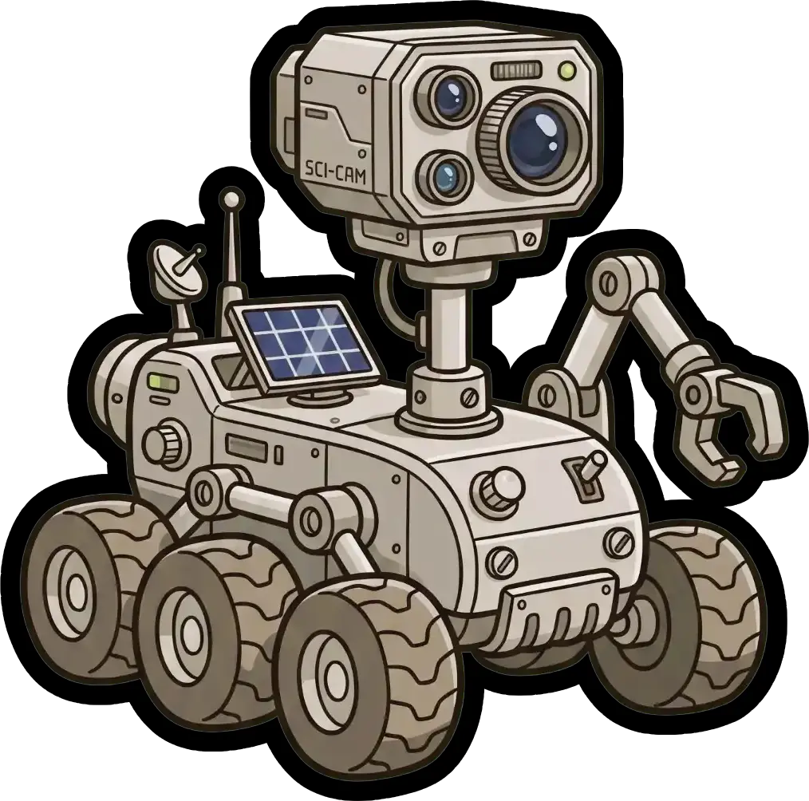
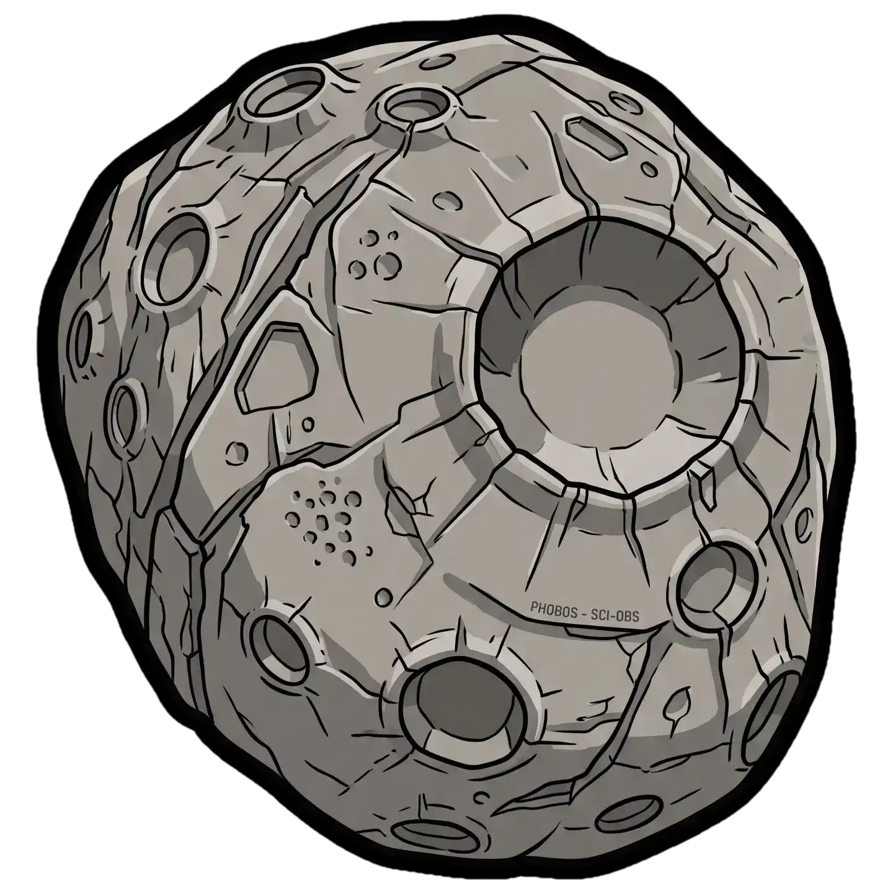
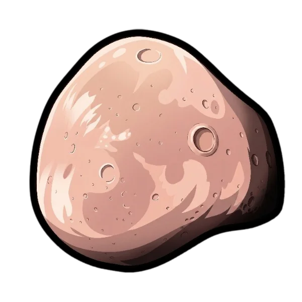

SatFleet Live
MARS
Layers
Guides
Launches
Next Passes
Account
Explore
⋯
Explore
Moon
Earth
Deep Space
Layers
Guides
Launches
Next Passes
Account / Premium
Loading Martian surface...
Image: NASA/USGS (Mars Trek — Viking Colorized Global Mosaic)
Layers
▶ Legend
−
Active Rovers

Active rovers (+ trail driven)
Historic landing sites
Orbiters
MRO (NASA)
Mars Odyssey (NASA)
Mars Express (ESA)
Hope / EMM (UAE)

Phobos

Deimos
Layers
×
Rovers
Historic Sites
Orbiters
—
×
—
—
 Explore
Explore

 Account / Premium
Account / Premium